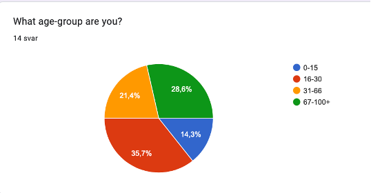
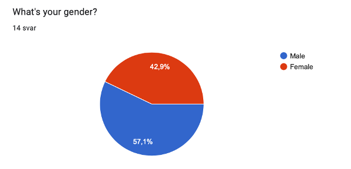
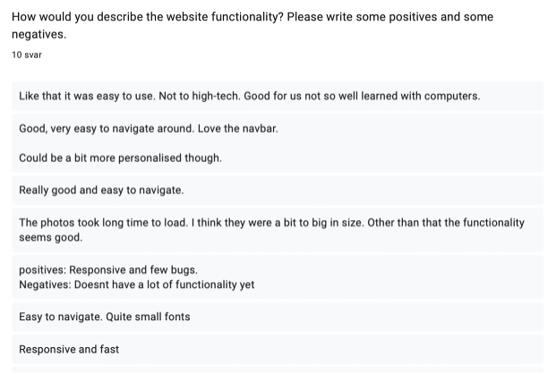
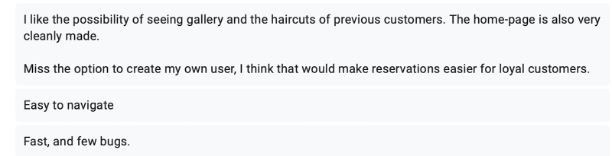
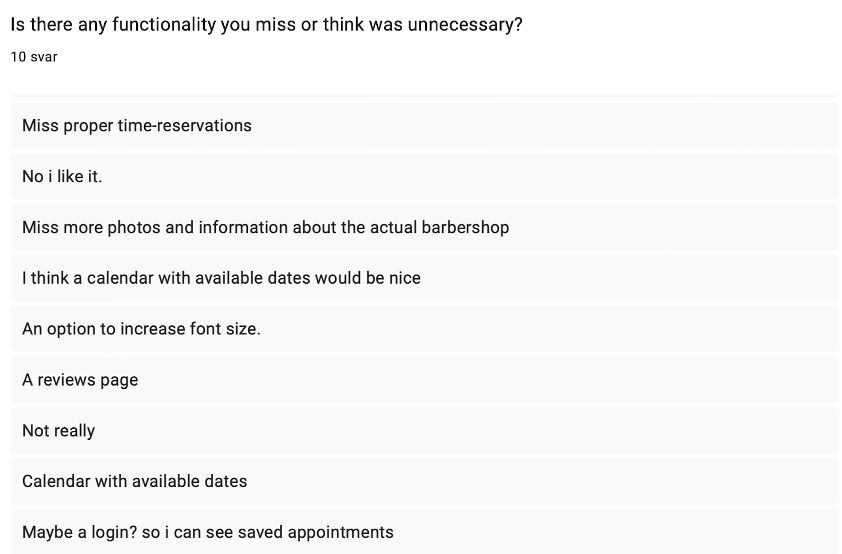
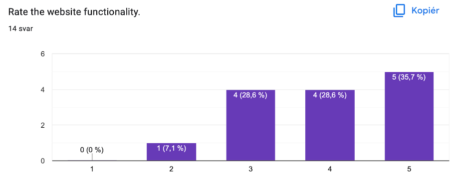
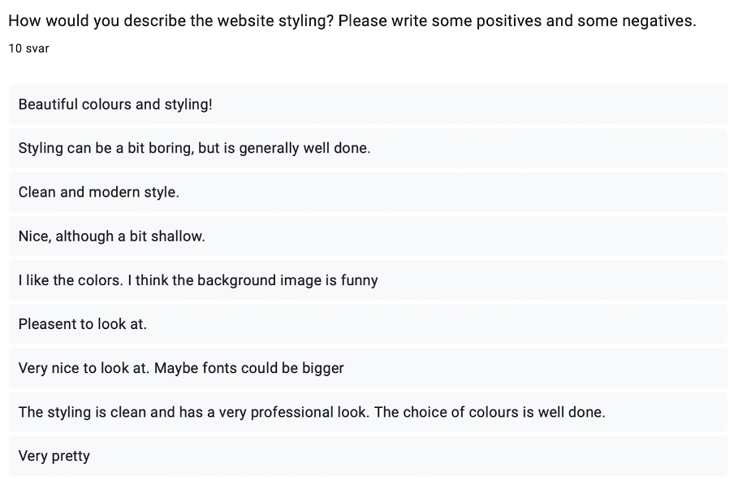
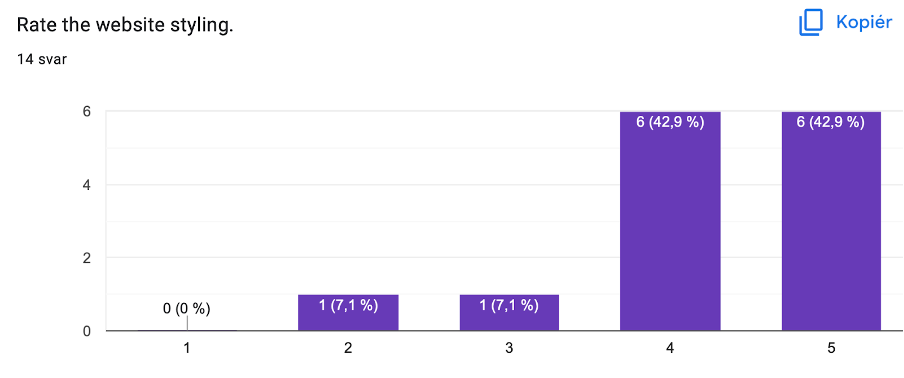

Table of contents
Administrative details
Clients: Kaj-Robert and Kurre Räven own and operates a hair salon on Solsiden, Trondheim. Their salon is called Cut and Shut and serves men and women of all ages. Kaj-Robert has recently experienced a decrease in customers since last summer. We offered to make him a website to hopefully get his business back on track.
Website name: Cut n Shut
Link to website:
Testing Document
We chose to keep the questions brief and open to get as many as possible to answer the form. Our questions were focused around functionality and design. We asked users to give us both positive and negative feedback. This enables us to understand what users liked about our page as well as what improvements can be made. We also asked them to rate both design and functionality. This is a great comparison tool to get a general image on what level of satisfaction the users had with our web-page. We also asked if they had any suggestions for additional functionality so we could further expand our site if we had extra time.
Tester Audience
The tester audience should reflect our target audience in a general way while taking the outer side of the range into account. In P2 we described our target audience as “people of all ages” so that's exactly who gets to test our site. By contacting our families we hoped to be able to get a wide variety of both gender and age. We also got to do live testing with Kaj Robert, which is one of our clients. As you can see according to the charts we have reached a broad variation of ages and gender within our families. They all completed the form and left a lot of useful feedback for us to reflect upon.
 Testing Platforms
We told each of our test-subjects to test the website on both a computer and their smartphone. That way they could make a review for the combined functionality and design of the page. We did not specify what browser the testers should be using, but since we did not receive any complaints on non-working websites or major bugs, we expect that the website is compatible with the most common browsers for our target audience. For our live-testing with Kaj Robert, we used google chrome for both computer and phone when testing.
Feedback Summary
Functional
Functionality: We received generally good responses on the functionality of our website. You can see some of the answers here. It seems like people were pleased with both navigation and overall usage of the website. Some of the users requested additional functionality but without a backend and a database, these are difficult to accomplish. The navbar received praise from multiple testers. An area we should look into is the gallery. If the image-files are too big the site will take unnecessary time loading and drain data usage of mobile users.
   Design
The design feedback was overwhelmingly positive. It seems like the users appreciate the clean and modern style of the website. When designing, we wanted to make something that looked professional but didn't take attention away from the actual functionality of the website. Some of the users answered that the design could be a little boring, and changes like more responsive buttons and input fields could help improve this. But overall our design received good ratings so it's not really necessary to change something that works.
 Live-testing
Our testing subject and client Kaj Robert tested the website live in front of us. The instructions were clear: “Here’s our website. Use it”. As the site loaded in Kaj Robert said “Well it sure looks good”. He then proceeded to search around the home-page as he was looking for something more than the welcome text. He then clicked through all the pages with the help of the nav-bar. He also clicked the logo to get back to the home-page. He told us he liked the gallery images and tried clicking them. Maybe we could add a second page for the different hairstyles with some info. He then tried the web- site on his smartphone. He enjoyed the navbar and found the site easy to use and very intuitive.
Your Response
Concerning functionality we want to make the website as smooth as possible. Low loading time and no bugs makes for a professional and well done website. Compressing images and streamlining code is key for a fast website. There are also a lot of fun and useful functionality opening up if a backend and a database is added. Making it possible to sign up as a user can keep track of all your current appointments as well as previous visits. A rating system could be implemented as well as collecting reviews on site. A calendar would also really help scheduling appointments as customers could more easily see what's available.
Self-reflection
The Web-tek project has not been super-demanding, but a really nice teamwork experience for everyone in the group. This is because programming as a team is hard! Merge conflicts and understanding each other's code are time- and motivation-consuming tasks. It is challenging finding time and place for everyone to meet and discuss code. Couple programming is a useful tool and can both improve code and reduce work-load. However it is a challenge and it's nice to get some experience with it. We used github as a git-repository to store and manage our code. This made the code easily accessible for the whole team and gave an overview of commits and branches. HTML, CSS and JS is a nice beginner frontend stack, and solutions for all our questions were easily found when googled.